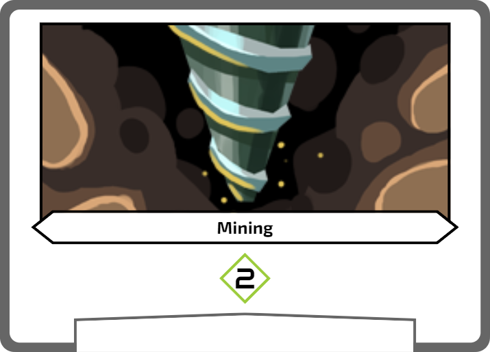
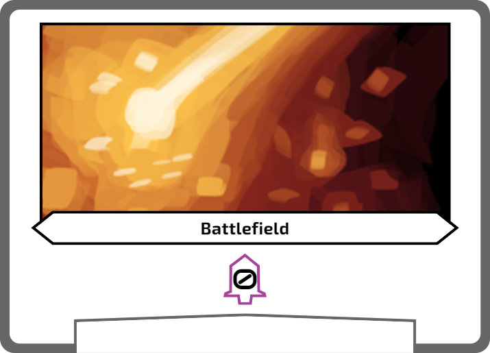
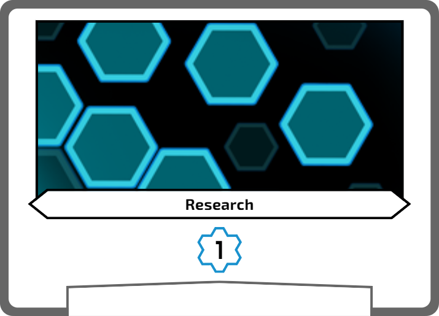
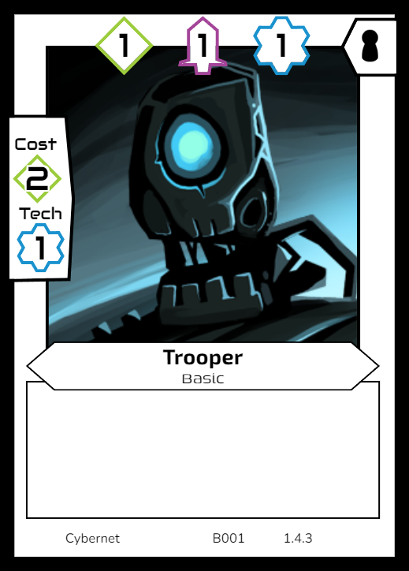

The two main objectives to win the game are to get 50 crystals in your supply, or reduce the opponents hit points to 0.
To achieve these goals, you’ll deploy your cards in your 3 lanes to mine crystals, level up your attack, or research advanced technology. Cards played in the Mining lane will help you gain crystals towards playing more cards, or going for an economic victory. The Attack lane lets you deal damage to your opponents hit points or prevent damage to your own. Playing cards in the Tech lane unlocks the ability to play more advanced cards and abilities, as well as play more cards on your turn. Balancing how you play out your hand will determine who claims the planet and it’s precious crystals.
Select a Faction to play as, and collect their base cards, faction deck and basic deck. Also collect any unique tokens that apply to your deck, such as Corruption or Boost tokens.
All players place their three base cards in the centre of the table to form your three lanes. While it’s up to your which order you place your lanes in, generally you will want to match the icons at the top of your cards, with the Mining on the left, Attack in the middle, and Tech on the right.
Mining | Attack | Tech

Place your basic deck face up in front of you where all players can see. Basic cards will all have 1-1-1 as their power and cost 2 with a 1 tech requirement.

Shuffle and cut each other’s faction decks, and place them next to your basic deck face down next to your basic deck.
Write down your hitpoint total and starting crystal count (shown on the base cards), or use counters or dice to track it. Unless otherwise stated, you start with 20 hitpoints and 5 crystals.
Flip the priority token, or another fair, 2-sided coin to determine who has priority first. Place the priority token in the play area of the player who won.
Draw up to 7 cards from your Faction Deck. Look at the cards and choose any number of cards to put on the bottom of your Faction Deck and then replace them with cards from your Basic Deck.
Start of Round
Apply any abilities from cards that specified “Start of Next Round” from the previous round.
Deploy Phase
Each player takes the below actions in order, then declares once they are done to have the player to the left take their turn. On your turn do the below actions, unless you have a card or ability that says otherwise.
1.1. Draw a card. You may draw from your basic deck, or your faction deck.
1.2. Add up the power of the cards in your Research lane and set this as your tech limit for the turn. Any cards played this turn do not add to your tech limit, unless you have an ability that specifically states that it does.
1.2. Play a card from your hand. Subtract the cost from your current crystal supply for each card as it’s played and make sure you have enough tech limit remaining. Trigger any “When Played” abilities on the card, in the order they are written. Fully resolve one cards abilities before playing the next. You may play any number of cards from your hand, provided you have the tech limit and crystals to do so.
Trigger abilities after paying the cost, except for abilities that change the cost or tech requirement for the card you are playing.
Attack Phase
Apply any abilities from cards played this turn that have an “Attack Phase” trigger, such as increasing your power or preventing damage, to any of the calculations below.
Count up the attack value of your in play cards in the attack lane and your opponents attack lane. Deal damage based on the difference to the player with the lower attack value. For more that 2 players, you only count the highest power compared to yours. See examples below for more detail.
Any players with 0 or less hitpoints at the end of this phase lose the game.
Example (2 players): If Player 1 has 7 attack and Player 2 has 3 attack, Player 2 takes 4 damage (decreases their hitpoints by 4).
Example (3+ players): Player 1 has 7 attack, Player 2 has 3 attack and Player 3 has 5 attack power. Player 1 takes no damage as they have the highest power. Player 2 takes 4 damage as it is the difference between their power and the highest power. Finally, Player 3 takes 2 damage as they are only 2 below the highest power.
Mining Phase
Apply any abilities from cards played this turn that have an “Mining Phase” trigger, such as increasing your power or preventing damage, to any of the calculations below.
Add up the power of all the cards in your Mining lane. Gain crystals to your supply equal to your Mining power.
If any player is at or above 50 crystals, they win the game. If multiple players are above 50 crystals, the player with the most crystals wins the game. If multiple players have the same amount of crystals, you may break the tie by the player with the most hitpoints, then power in the Attack lane, followed by the Tech lane, with the higher number being the winner. If all values are the same, then the game is a tie.
End of Turn
Trigger any end of turn abilities, starting with the player with the first token
End of Round
Transfer the priority token to the player to the left and reset any abilities that were only active “this turn”.